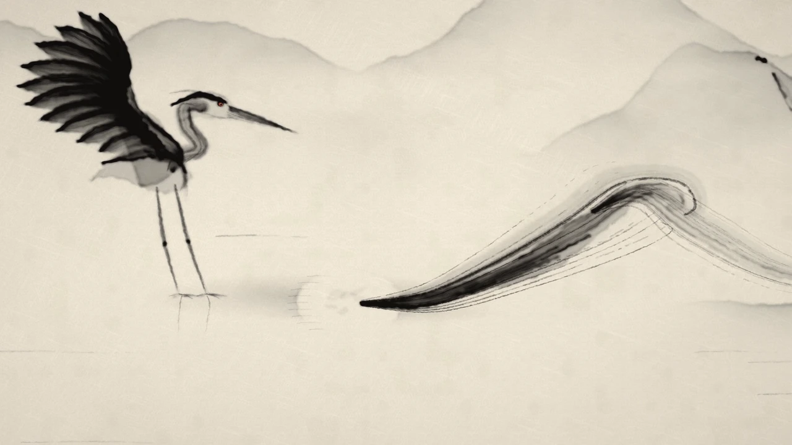

跳到影片
↖
全部风格
CODEX FILM STUDIO
中
/
EN
写
意
宣纸写意水墨
一笔
之间
。
Between
Strokes.
一喙破月，一跃惊雪。
▶
看两部短片

▶
播放笔势
I
A Mouthful of Moon
蓄势
·
F. 0702
↗
↓
滚动展卷
I
苍鹭
II
狐狸
双片放映
纸上两则
月亮近在眼前，柿子还差一点。
I
一喙月光
0:46
II
再够一枚柿子
0:44
FILM I · 00:46
A Mouthful of Moon
苍鹭盯着芦苇间的一轮月。它等了许久，终于向水里啄了一口。
英文旁白
声音小室
听见纸上的动静
在池边，听喙尖破水的一瞬。在雪地，听后爪蹬离地面的那一下。
苍鹭
/
狐狸
Water Under the Bill
Gemini 原曲
片中配乐
拟音